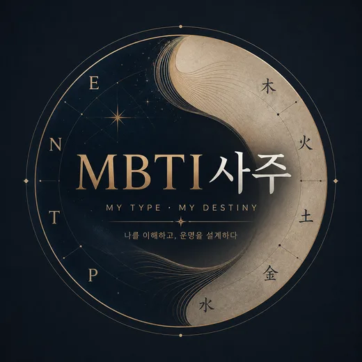

무료사주 · MBTI × 사주 분석 엔진현재 이용 가능 • 계속 업데이트 예정
생년월일만 넣으면 사주 여덟 글자와 MBTI로 성향을 분석해드립니다.
양력으로 입력해 주세요.
모르면 그냥 두세요. 시간을 넣으면 결과가 더 촘촘해집니다.
비워두면 사주로 MBTI를 추정해 드립니다. 이미 알고 계신다면 골라주세요. 사주 추정 결과와 얼마나 맞는지 비교해 드립니다.
선택 안 함 — 사주로 추정합니다.
태어난 시간을 넣으면 추정이 훨씬 정확해집니다.
재미와 자기 이해를 위한 서비스입니다. 미래를 단정하지 않으며, 의료 · 법률 · 투자 판단의 근거로 쓰지 마세요.
연인 · 친구 · 부모자식 · 비즈니스궁합 — 같은 두 사람이라도 관계가 다르면 궁합이 달라질수있습니다. 아빠같은 자식. 딸같은 엄마. 사주와 MBTI가 관계의 역동성을 정합니다. 두사람의 사주정보만 입력하면 바로 나오는 무료궁합입니다.
부모자식을 고르면 첫 번째 사람이 부모입니다.
재미와 관계 이해를 위한 서비스입니다. 관계를 단정하지 않으며, 결혼 · 채용 · 인생 결정의 근거로 쓰지 마세요.